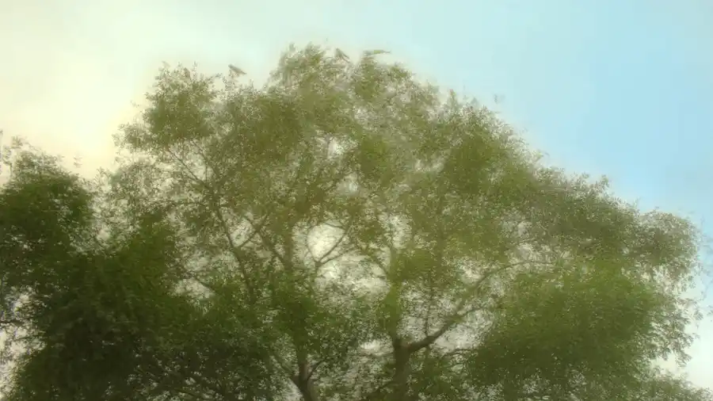

נוף
תיאור
קו ראשון לים, שיפוץ אדריכלי מהיסוד.
כמה סיבות שבגללן הנכס הזה שווה ביקור.
תיאור
בין שדרות בן־גוריון לכיכר דיזנגוף, השכונה משלבת את הבאוהאוס של העיר הלבנה עם בתי הקפה והמסעדות הטובים בעיר.

השאירו פרטים ונחזור אליכם עוד היום לתיאום ביקור פרטי בנכס, בדיסקרטיות מלאה.